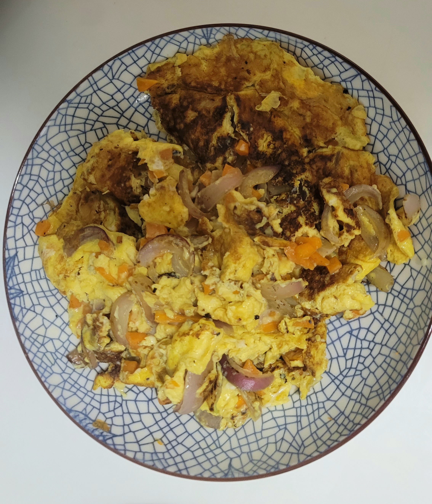

Onion Omelette

Description
Simple dish more famously known as 洋葱煎蛋 (yang cong jian dan)
Ingredients
Serving size: 4 people
- 1 medium size onion, sliced
- 1/2 carrot, cubed
- 4 eggs
- pinch of salt
- dash of white pepper
- 1 tbsp vegetable oil
Instructions
- Prepare onions and carrots.
- Crack eggs and add salt, white pepper. Beat until well combined.
- Add oil and stir fry onions, followed by carrots.
- Transfer onions and carrots to eggs.
- Add more oil and pour in egg mixture. Flip once eggs are golden brown and aromatic. Serve hot.